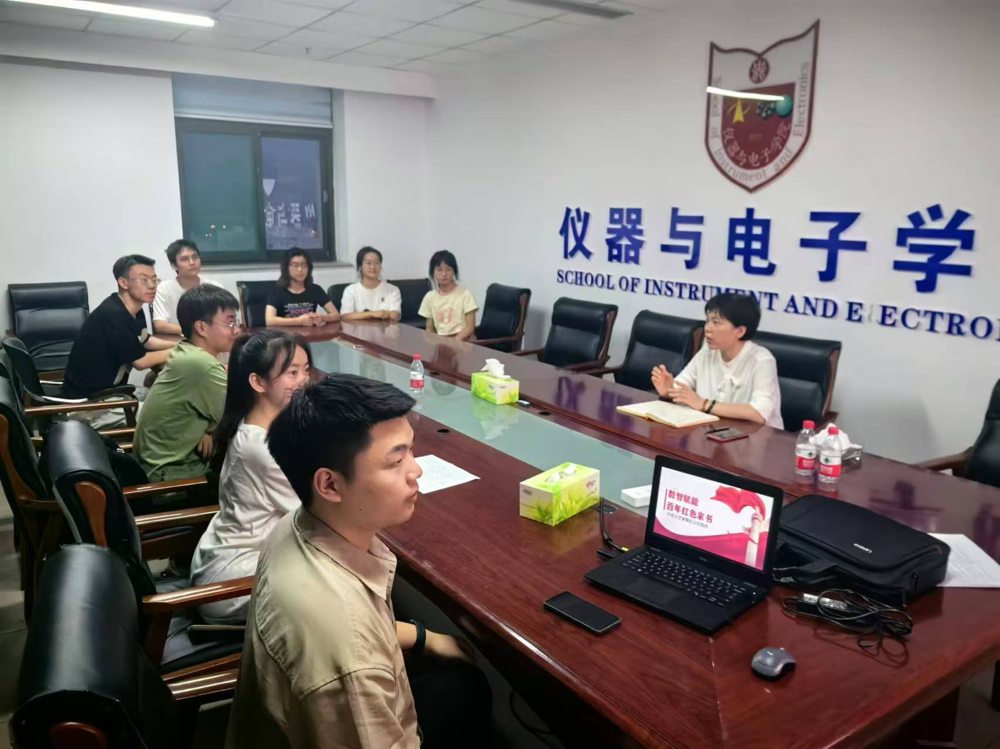

在这个充满活力的夏天，期待已久的暑期社会实践也随期而至。为了确保本次社会实践的顺利开展，中北大学“数智赋能百年红色家书”暑期社会实践团于11号楼1207会议室举行启动会议。
社会实践指导教师杜瑞平对本次实践做了详细的部署和安排，并对实践计划提出宝贵意见，希望实践队员在实践中体会红色家书的时代内涵，用自身所学赋能，在社会实践中强本领、提素质。领队阳博才详细安排了本次暑期社会实践活动的路线地点、实施计划、具体要求等有关内容。
为确保每位实践团成员都能在暑期社会实践中有所收获，实践团师生们详细分析和讨论了每日的实践计划和安排，制定详细的实践方案。在即将到来的社会实践中通过调查走访、问卷调查以及宣讲展示等形式，丰富巩固实践成果。
此次暑期社会实践活动形式多样，包括寻访家书、采访调研和诵读排演等。多样化的实践形式能够帮助同学们深入了解红色家书，还能提升大家的沟通能力、团队协作能力和创新思维能力。
实践团的同学们一致表示，在实践过程中要特别重视团队协作，相互支持、共同解决问题。这不仅能提高社会实践效率，还能培养团队精神和责任感。每一位团队成员的努力和付出，都是取得优异成果的关键。
实践团成员们将珍惜这次暑期社会实践的机会，在实践中学习，在实践中成长！相信在师生的共同努力下，实践团一定能够圆满完成本次社会实践活动，用脚步行走在祖国大地上，书写无悔的青春篇章！
积极投身暑期实践，努力提升爱国情怀
2024年08月21日